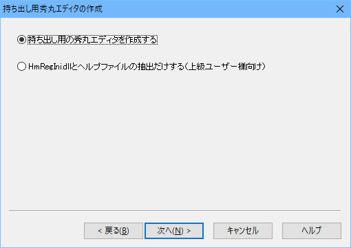
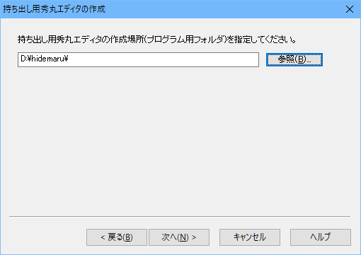
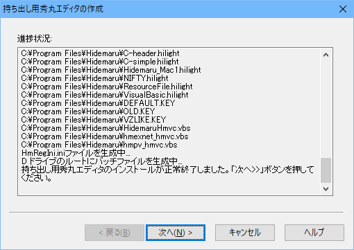
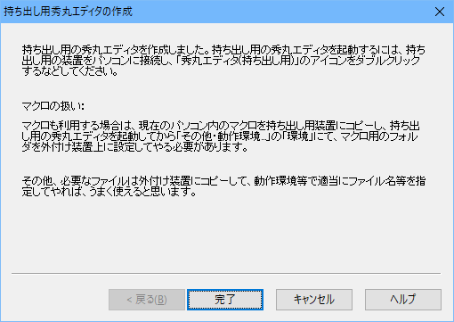

「秀丸エディタ持ち出しキット」とは、パソコンに秀丸エディタをインストールしなくても、 USBメモリ/USBハードディスク等リムーバブルメディア/ドライブ上で秀丸エディタを使用可能にするためのキットです。
この持ち出しキット自体はフリーソフトウェアになります。
動作条件は、以下の通りで、古い秀丸エディタ、64bit版秀丸エディタ/英語版秀丸エディタでは動作しません。
64bit版秀丸エディタで動作しないのは、USBメモリ等に入れて、どこでも動作させるのが目的の「持ち出しキット」だからです。 64bit版秀丸エディタは、64bit OS 上でしか動作しないため、「どこでも動作させる」と言う目的からいうと向いていません。 (64bit OSが一般的になれば状況は変わるかもしれません)
手順の詳細は以下の項目を参照してください。
「秀丸エディタ持ち出しキット」は、現在パソコンにインストールされている秀丸エディタを、リムーバブルメディア/ドライブ上にコピーし動作するように設定します。
その為、
が、必要になります。
「秀丸エディタ持ち出しキット」は以下の場所からダウンロードできます。
2018/04/25 現在、Ver.2.08です。
ダウンロードしたファイルを実行してください。インストーラが起動します。
以下の画面が表示された場合には、「持ち出し用の秀丸エディタを作成する」を選択してください。

後は、「持ち出し用秀丸エディタの作成場所」を選択します。 (リムーバブルメディアを指定する場合は、事前にOSへ認識させておいてください)

パソコンにインストール済みの秀丸エディタの場所は自動的に検索されます。そこから関連するファイルをコピーしレジストリから設定を読み出し、「秀丸エディタ持ち出しキット」用の設定ファイル「HmRegIni.ini」が作成されます。

最後に注意書きが表示されるのでよく読みましょう。

コピーされるのは、秀丸エディタ本体および関連ファイルだけなので、マクロ・単語補完の辞書ファイル等は別途コピーしておく必要があります。
「秀丸エディタ持ち出しキット」は、レジストへのアクセスをINIファイルへ切り替えるDLLがインストールされます。その為、動作せているパソコンの「レジストリ」は書き換えません。
ただし切り替わるのは秀丸エディタ本体を経由する場合のみで、外部DLL、COM等でレジストリを使うような場合には、対応していません。
よくわからない場合は、念のため「HmRegIni.ini」のバックアップをとっておき、そのまま再度セットアップする事を推奨します。
セットアップ時に、「HmRegIni.dllとヘルプファイルの抽出だけする」を選ぶと、 HmRegIni.dllとヘルプファイルを取り出せるので、「持ち出し用の秀丸エディタ」に上書きしてください。
よくわからない場合は、念のため「HmRegIni.ini」のバックアップしてください。パソコン本体側の秀丸エディタをアップデートし、そのまま再度「秀丸エディタ持ち出しキット」をセットアップする事を推奨します。
秀丸エディタ本体のインストーラーを解凍できる場合には、解凍して出来たファイルを、「持ち出し用の秀丸エディタ」に上書きしてください。